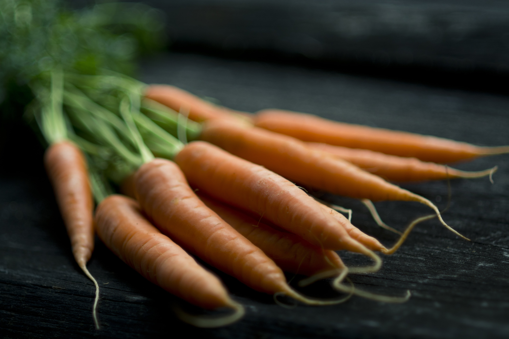

Lively State Street in Media, PA is overflowing with dining choices. But none is more inspired then the little jewel box of a BYOB called Lotus Farm to Table.
The menus are filled with healthy dishes simply prepared, and the food is complimented by a dozen varieties of teas. The setting is Asian inspired. The mood is relaxed. And the experience is well worth the trip.
Here's a Few Sample Menus
Spring Sample Menu
Here's a taste of what a light spring menu looks like here at Lotus
Spring Lunch Menu
Small and Lite
Mache
Served with grilled purple top turnip, walnuts, grapefruit, and candied beet vin
Rutabaga
Served with arugula, turnip salad, broccoli, kale, and sundried tomato vin
Grilled Belgian Endive
Served with brussels, whole wheat croutons, vanilla bean, and chervil
Flatbread with onion marmalade, braised duck confit, walnut, roasted apple, boiled egg, and arugula pesto
Main
Duck confit
Served with radish, pea tendrils, arugula, baked kale
Grilled chicken sandwich
Served with smoked onion, basil, smoked mozzarella, jalapeño, andramp
Grilled cheese with chicken confit
Made with aged cheddar, local organic American, roasted apple, malt aioli, greens
Oregano brined tofu
Served with red beet pita, dill yogurt, brussels, greens
Braised pork sandwich with brioche
Served with royal blue, sage pesto, caramel popcorn
Grass-fed beef burger with house bacon
Served with wise green cheese, mustard aioli, red onion, fried egg, greens, dill vin
Vital Necessities
An asian-inspired meal that many enjoy and many more return for
Vital Necessities
Hand Rolled Loose Teas
Happy tea
A clear green tea which brings on a good mood with a hint of mint to delight and lavender to transport. The first sip will relax you; full of satisfaction and harmony, tranquility and serenity.
Beauty Secret
The fragrance of this clear amber tea inspires smooth and flawless skin; take a little sip, and savor the scent of fresh cassia blended with oolong. The oolong will help sooth the heart and spleen, bringing clarity and freshness to your skin.
Charm tea
A clear lemon tea which produces a sparkling nectar that will invigorate you like a spring breeze. Produced from centuries of old tea trees and low altitude herbs, this tea clears away fatty deposits and heavy feelings to make you beautiful and buoyant.
Oolong
drink for a healthy heart while relaxing and savoring the sensations as you sip this wonderful drink. It's good for the soul, and what's good for the soul is good for the body. Drinking oolong tea will make you healthier and live longer.
Chinese Green
Attributes to many health benefits including; increases metabolism, helps fight allergic reactions, boosts the immune system, reduces hypertension by connecting with cholesterol, absorbing and blocking it. This tea also suppresses and reverses aging, while refreshing the body with it's high Vitamin B content, in turn helping the body deal with stress and release more energy.
Chrysanthemum
A caffeine free tea, which is good for internal cooling of the body. This flower acts as a detoxification herb in Chinese medicine. The cooling effect of the tea can also treat heat-related illnesses such as fever, flu and sore throat, along with seasonal allergies. This tea lends to an energetic body, better vision and hearing.
Japanese Matcha
Powdered green tea used in traditional tea ceremonies since the early 13th century. It is valued for its rich supply of antioxidants and cleansing the toxins of the body.
Japanese Green Tea
Contains powerful antioxidants, which are beneficial to health; helps fight viruses and slows aging, and contributes to lowering cholesterol.
Anji white
Immature tea leaves that are picked before the buds have fully opened. The secret lies in what happens after the buds are plucked; the leaves are steamed to give the tea a sweet, silky flavor. This tea is picked only during the first few days of spring, which makes it very unique. Drink this tea to help boost the immune system. It is rich in antioxidants and helps maintain youthfulness as well as strong bones.
Flowering Teas
Hand rolled green tea with jasmine or chrysanthemum blooming flower.
South African caffeine free tea, produces a naturally sweet yet slightly nutty taste. This red tea is full of vitamins and minerals. It helps with insomnia, relieves stomach cramps, and indigestion
Tulsi
One of India's most scared herbs due to it's health benefits. The tea's properties promote wellness by reducing stress, building the immune system, and relieves inflammation. The flavor is crisp, with a hint of pepper.
Darjeeling
Oragne Pekoe
Tulsi Chai
Lemon-spiced ginger tulsi
soothes the digestive tract, while reducing the aches of the stomach
Hand Rolled Iced – Teas
Green Oolong
Rose Oolong
Gardenia Oolong
Jasmine Oolong
Tea Acessories
sugar plum
peach blossom
goji berries
rose buds
dried lemon slices
French Press - La Colombe
Available in decaffeinated, caffeinated, organic caffeinated
House-made spritzers 3
Available in Lemon, Pomegranate, Ginger
Fall Dinner Menu
Our customers love our fall dinner menus and how delicious they are
Fall Dinner Menu
Small and Lite
Baby field lettuce
Served with grilled peach, fennel, red onion, and dill vin
Braised lamb shoulder
Served apple jam, cured tomato, and potato
House pancetta
Served with poached potato, charred grapes, and celery
Pennsylvania trout taco
Served with blue corn tortilla, cinnamon, and truffle aioli
House pulled mozzarella
Served with cured tomato, compressed apple, and charred cucumber
Flatbread with mozzarella, heirloom tomato, broccoli, sundried tomato pesto, and chicken confit
Citrus cured feta
Served with wagyu tongue, toasted oats, and tomato stew
Radish
Served with crimini mushroom, golden beets, and pea tendrals
Chef’s selection-artisan pasteurized cheese board
Main
Flounder
Served with golden beet and blueberry jam
Wester ross salmon
Served with onion jam apple, smoked cauliflower, and hazelnut
Dill brined tofu
Served with grilled asparagus, watermelon, and roasted onion
Chicken breast
Served with baby bok choy, and potato pancake hash
Grass-fed beef burger
Served with wine tomme, lamb bacon, spicy aioli, red onion, and greens
Veal milanese
Served with oats, english pea, and heirloom tomato sauce
Seared scallop
Served with avocado, grilled broccoli rabe, and soy vin
Rohan duck breast
Served with foie emulsion, escarole, fennel peanut butter bread pudding
Our Team

Courtney Rozsas - Proprietor
A graduate of Drexel University, with a Bachelors Degree in Biology, Courtney Rozsas is passionate about good food that’s good for you. A native of Garnet Valley, PA, she had always been intrigued by Asian cultures. Courtney was inspired by the robust health and good nature of the hospitable people she met traveling through Southeast Asia. In fact, her trips to China and Japan inspired her to study Chinese medicine and the connection between eating healthy and well-being. So she opened Lotus Farm to Table, a restaurant that offers pure, simple dishes made from locally produced ingredients, and featuring a menu of more than a dozen varieties of hand rolled teas.
Ryan Sulikowski - Executive Chef
A graduate of Drexel University, with a Bachelors Degree in Biology, Courtney Rozsas is passionate about good food that’s good for you. A native of Garnet Valley, PA, she had always been intrigued by Asian cultures. Courtney was inspired by the robust health and good nature of the hospitable people she met traveling through Southeast Asia. In fact, her trips to China and Japan inspired her to study Chinese medicine and the connection between eating healthy and well-being. So she opened Lotus Farm to Table, a restaurant that offers pure, simple dishes made from locally produced ingredients, and featuring a menu of more than a dozen varieties of hand rolled teas.